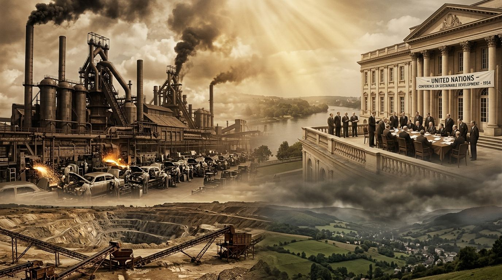

01 — Genèse historique
La genèse d'un pillage institutionnalisé
Après la Seconde Guerre mondiale et la croissance économique, les Nations s'efforcent d'imposer la praxis des trois piliers.
Elles le font par crainte, d'une part, d'une raréfaction des produits de consommation due à l'épuisement des écosystèmes de production et, d'autre part, d'une dégradation mondiale irréversible de la qualité atmosphérique due à la pollution générée par la surproduction.
À l'heure actuelle, ce modèle poursuit le pillage écologique et la paupérisation du monde non-occidentalisé sous couvert de traités légaux.